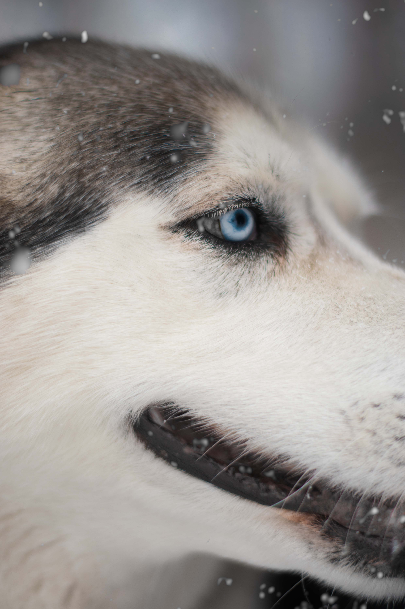
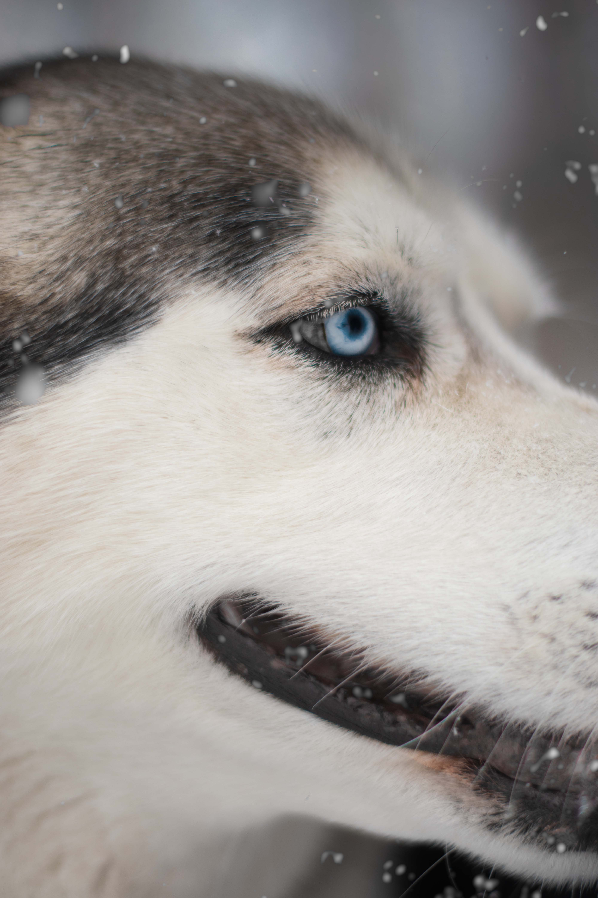
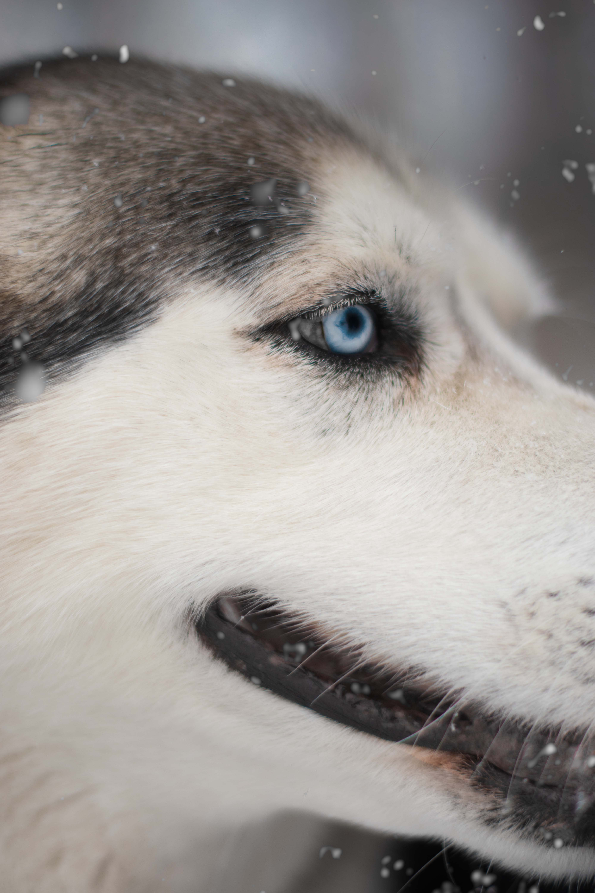
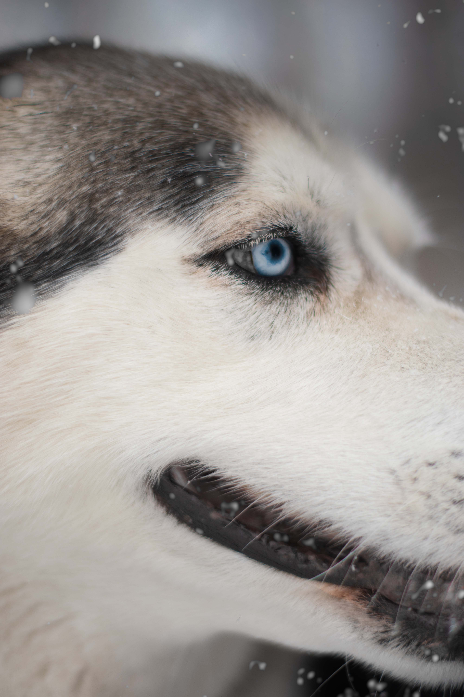

 

Amores Callejeros nació el 9 de julio de 2021. Desde ese día nos propusimos trabajar en equipo junto a la comunidad, por el bienestar animal. Nos impulsa ayudar a los animales víctimas del desamor y maltrato. Ayudamos a concientizar sobre la importancia de castrar, involucrarse y cumplir con el calendario de vacunación de nuestros fieles compañeros. Desde el primer día hacemos todo lo que está en nuestras manos y más para poder curarlos en cuerpo y alma y la mayoría salen adelante. En ocasiones, lamentablemente, sus cuerpitos ya estan muy deteriorados y cansados, y los acompañamos para que pasen sus últimos días acompañados, rodeados de cariño, respeto y de la dignidad que se merecen. Varios de ellos fueron adoptados por hermosas familias. Algunos siguen esperando cerrar su círculo y otros se encuentran luchando por sus vidas.
Participamos en campañas de castración y vacunación; y asistimos a familias con animales, que nos necesitan. Muchas empezamos con este compromiso hace mucho, de forma individual y la vida nos fue encontrando para luchar por ellos, los animales. No contamos con espacio físico propio por lo que nos manejamos con hogares de tránsito que nos permiten renovar día a día nuestro compromiso con los animales, salvando vidas y brindando hogar, atención veterinaria, alimento y lo más importante todo nuestro afecto.
Desde nuestra parte cubrimos gastos gracias al aporte de quienes nos ayudan económicamente, donando alimento, medicamento e insumos entre otros. También participamos en eventos para recaudar fondos. Por este motivo es que hoy te invitamos a ser parte de este hermoso compromiso y apadrinar/amadrinar a nuestros rescatados donando $ 200 por mes. El dinero recaudado nos dará la tranquilidad de saber que es un dinero fijo que entra por mes para darle a ellos lo que necesitan.